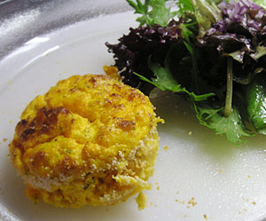

Karotten-Souflé
4,5 von 66 kleine Soufléförmchen mit Butter ausstreichen und mit etwas Paniermehl darüber verteilen. 800 g Karotten schälen und in etwas Wasser gar kochen, durch ein Passevite treiben oder mit dem Stabmixer pürieren. 1 Päckli Rahmquark (150 g), 1 Messerspitze Zucker, 1/2 Teelöffel frischer Dill, Pfeffer und Muskat, 1/4 Teelöffel Salz, 4 Eigelb sowie die Karotten gut miteinander vermischen. 5 Eiweiss und eine Messerspitze Backpulver zusammen steif schlagen und sorgfältig mit dem Püree vermischen, in die vorbereiteten Förmli geben und sofort im vorgeheizten Ofen bei 180 ca. 30-35 Minuten backen. Mit Salat servieren.
